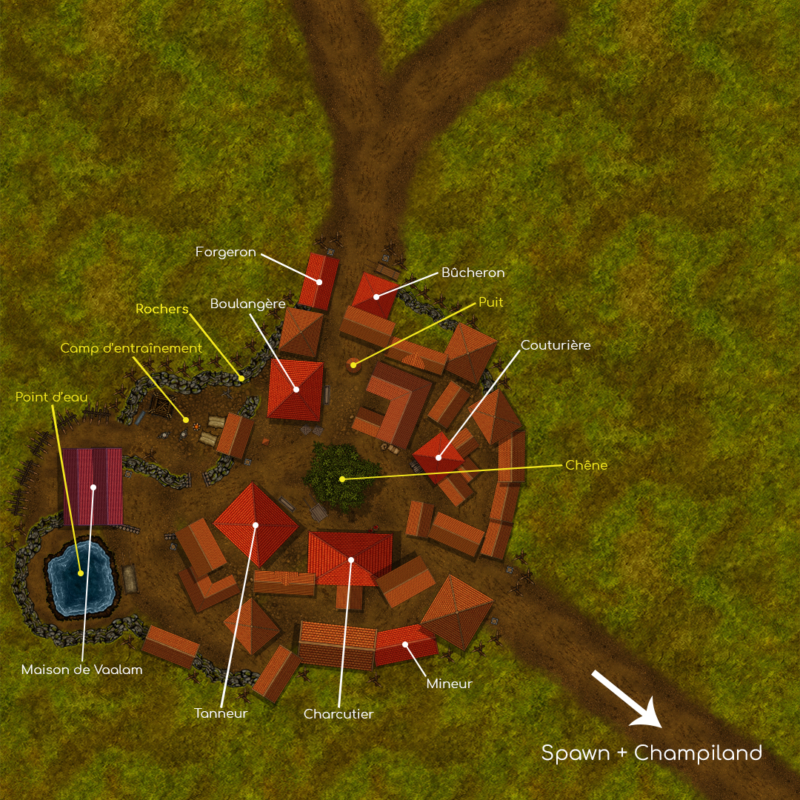
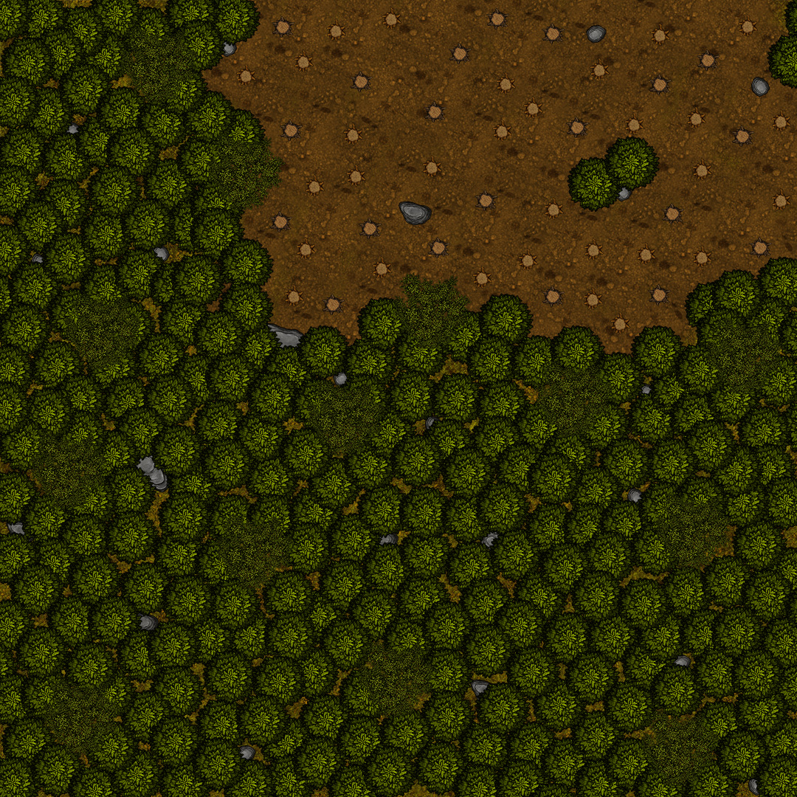
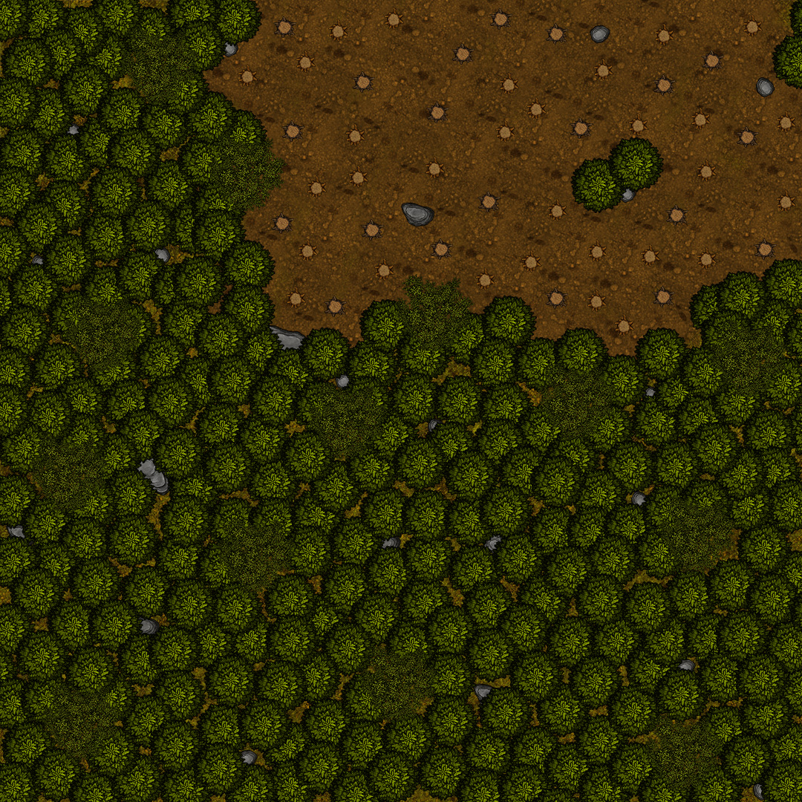
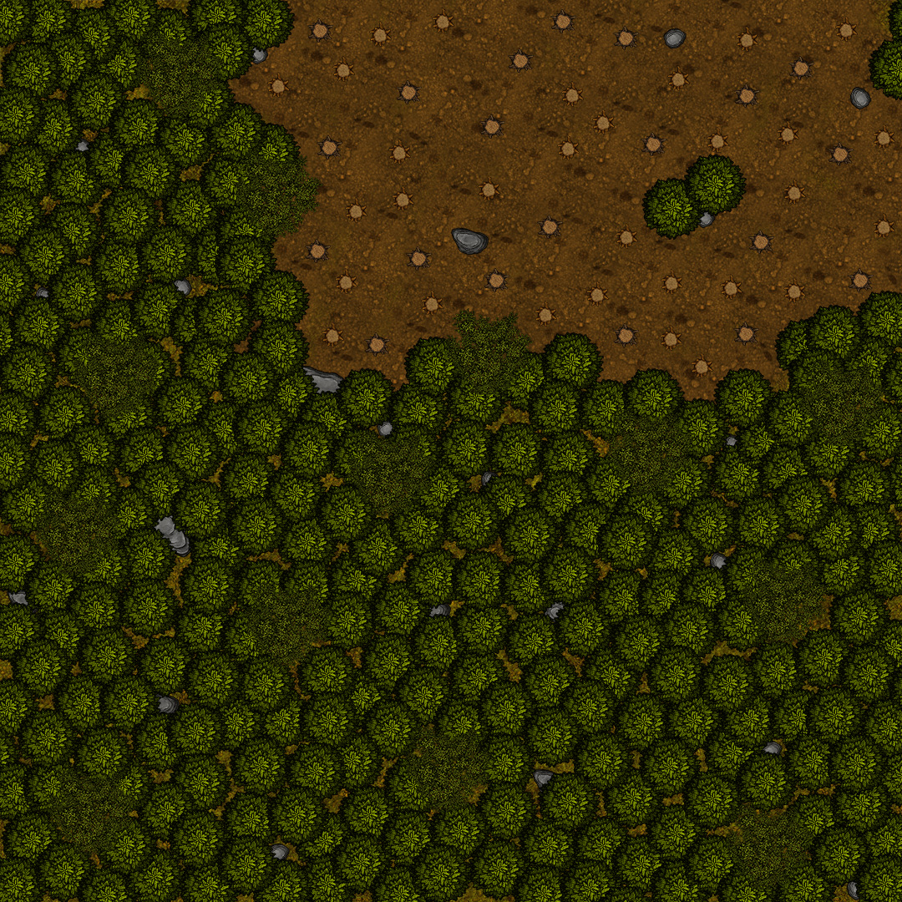

PLANS
RÉALISATION
Depuis 2021
MEMBRE(S) DU PROJET
Thomas Dagorne
LOGICIEL(S) UTILISÉ(S)
Adobe Photoshop
PROJET LIÉ
Avec des amis, nous travaillons sur un projet qui se trouve être très ambitieux et qui prend en son sein d’autres projets comme celui des plans ou encore de la création du village dont je suis chargé de réaliser.
Mon objectif à travers ce projet est d’essayer de reproduire l’univers que l’on a imaginé par écrit, sur un plan. Cette carte est divisée en morceaux (1000px par 1000px). Une fois assemblés, ces morceaux forment la carte qui pour l’instant n’est pas encore terminée.
Je travaille morceau par morceau. Pour les réaliser, j’utilise Adobe Photoshop ainsi qu’une banque d’images destinée à la création de plans/cartes.

 

